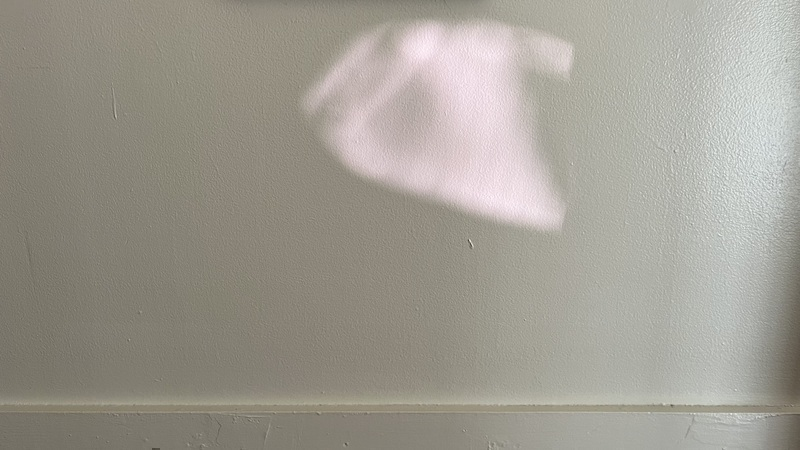

log
today, Bob asked me if I had any bananas. The answer was that I had six bananas, but they were brown and in the freezer. It is, perhaps, more relevant to readers ot this log to know that I also have several copies of Bob's recent book, Landscaper, and they will be available for sale at Theatre of the Flat Imagination tomorrow.

Theatre of the Flat Imagination: anniversary will occur at eight o'clock pm, eastern daylight time, on October 23rd, 2024 and will feature performances by Robert David Carey & me. If you'd like to attend this event, please get in touch with me by email, and I'll send you the address.
lots of new dates added to the performances page!




half hidden studio for the weekend with memory object

very excited to be performing with heather bowlan, julia gwiazdowski, alexandra naughton, aaron gadbury, amy saul-zerby, and peter webb at the launch reading for alexandra's novel American Mary on September 14th at Small Works Gallery in Philly. I'm also very excited about this cool flyer ebs sanders made for the event. If you're in or around Philly, please come join us!
williamthazard [at] pm.me